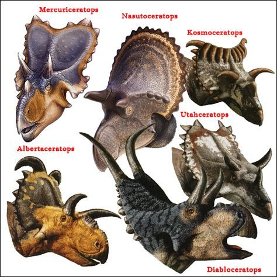
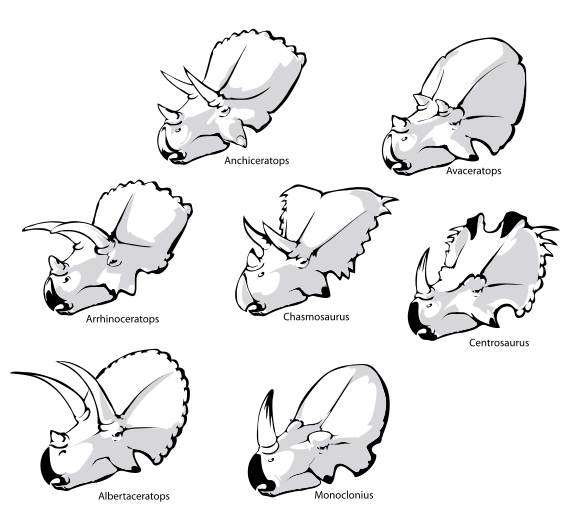
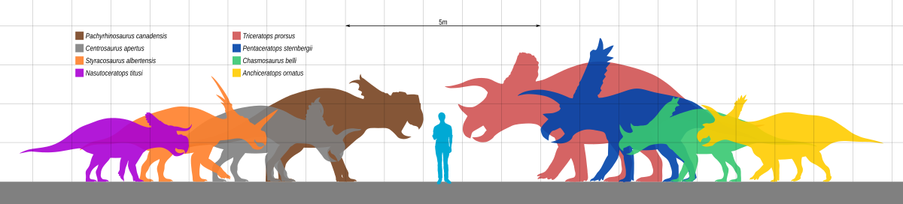
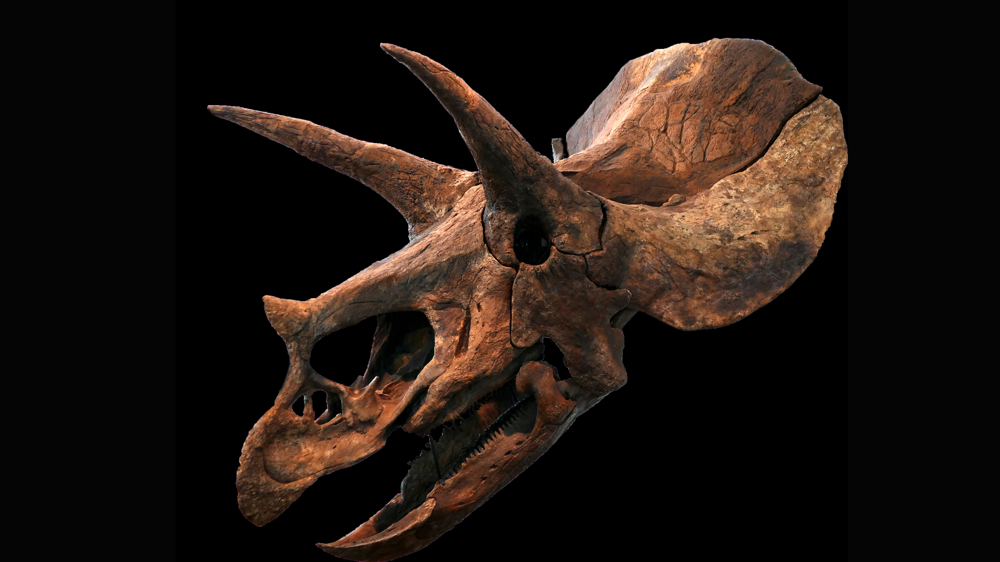
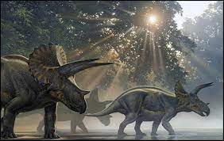
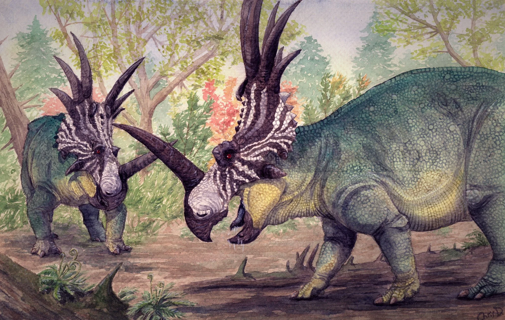
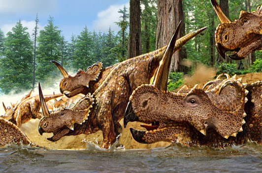
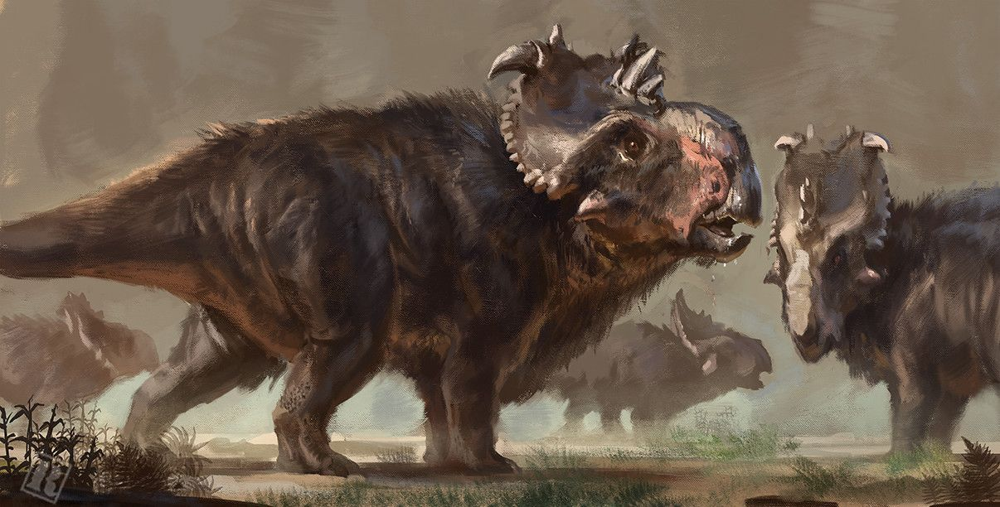
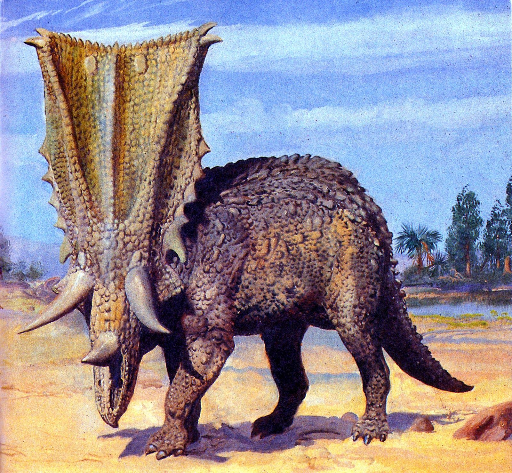

Ceratopsidae é uma família de dinossauros herbívoros que viveram durante o período Cretáceo Superior (cerca de 90 a 66 milhões de anos atrás). Os ceratopsídeos são conhecidos por suas grandes cabeças adornadas com chifres e uma gola óssea ou "franja" na parte posterior do crânio. Eles são um dos grupos de dinossauros mais distintos e icônicos, com representantes famosos como o Triceratops e o Styracosaurus.
Esses dinossauros viviam em grandes manadas nas regiões que hoje correspondem à América do Norte e Ásia, sendo animais herbívoros que pastavam em grandes áreas abertas. Sua aparência imponente, especialmente a combinação de chifres e a gola protetora, desempenhava um papel importante em defesa, exibição e talvez em interações sociais.
Chifres Faciais: Muitos membros da família Ceratopsidae possuíam chifres na face, localizados sobre os olhos, o nariz ou ambos. O famoso Triceratops tinha três chifres, enquanto outros como o Styracosaurus possuíam um único chifre no nariz e vários outros chifres menores na gola.
Gola Protetora (Franja): Uma característica comum entre os ceratopsídeos é a gola óssea ou franja que se estendia para trás do crânio. Esta estrutura podia ser sólida, como no Triceratops, ou perfurada por grandes aberturas, como no Pentaceratops. Embora a função exata da gola ainda seja discutida, acredita-se que ela poderia ter servido para proteção, regulação de temperatura ou exibição durante o acasalamento e interações sociais.
Tamanho e Corpo Pesado: Os ceratopsídeos eram quadrúpedes robustos, com corpos musculosos e pesados. Alguns dos maiores membros, como o Triceratops, podiam medir cerca de 9 metros de comprimento e pesar até 12 toneladas.
Mandíbulas e Bico: Como herbívoros, os ceratopsídeos possuíam um bico córneo na parte frontal da mandíbula, semelhante ao de papagaios modernos. Eles usavam esse bico para cortar plantas duras e a vegetação baixa. Além disso, eles possuíam dentes especializados organizados em baterias dentárias, o que permitia que triturassem vegetação fibrosa de forma eficiente.
Os ceratopsídeos podem ser divididos em duas subfamílias principais, com base em suas características cranianas:
Esses dinossauros são caracterizados por suas golas longas e chifres sobre os olhos que costumam ser longos e bem desenvolvidos.
Exemplos: Triceratops, Chasmosaurus, Torosaurus.
sses ceratopsídeos têm golas mais curtas e, em geral, chifres nasais proeminentes, enquanto os chifres sobre os olhos podem ser menores ou ausentes.
Exemplos: Styracosaurus, Centrosaurus, Pachyrhinosaurus.
Os ceratopsídeos eram herbívoros gregários, vivendo em grandes manadas e se alimentando de vegetação rasteira e arbustos. A estrutura social dessas manadas pode ter sido complexa, com os chifres e as golas desempenhando um papel em rituais de cortejo ou na demonstração de dominância entre indivíduos.
A forma e o tamanho das golas e chifres variavam entre as espécies e, possivelmente, entre os indivíduos dentro de uma mesma espécie. Isso sugere que essas estruturas eram importantes para exibição visual, ajudando os dinossauros a reconhecer membros de sua espécie, atrair parceiros e intimidar rivais.
Os fósseis de ceratopsídeos são mais comuns na América do Norte, especialmente no Canadá e Estados Unidos, onde muitos dos primeiros fósseis foram descobertos em depósitos como a Formação Hell Creek. No entanto, restos de ceratopsídeos também foram encontrados na Ásia, particularmente na Mongólia, indicando uma distribuição ampla.
O Triceratops é um dos dinossauros herbívoros mais icônicos e facilmente reconhecíveis devido aos seus três chifres e ao grande colar ósseo que protegia seu pescoço. Ele viveu no final do período Cretáceo, cerca de 68 a 66 milhões de anos atrás, pouco antes da extinção dos dinossauros. Fósseis desse dinossauro foram encontrados na América do Norte, especialmente nos Estados Unidos e Canadá. Apesar de seu tamanho imponente, o Triceratops, como muitos dinossauros, tinha um cérebro relativamente pequeno em relação ao tamanho do corpo.
O Styracosaurus é um dinossauro herbívoro da família Ceratopsidae, conhecido por seu grande colar ósseo e pelos impressionantes chifres que se projetavam de sua cabeça. Ele viveu no final do período Cretáceo, aproximadamente 75 a 72 milhões de anos atrás, na região que hoje corresponde ao Canadá. Embora não seja tão famoso quanto o Triceratops, o Styracosaurus é um dos ceratopsídeos mais notáveis e possui características físicas únicas que o tornam um dinossauro fascinante. O chifre central do Styracosaurus era significativamente menor do que os chifres acima dos olhos, mas o arranjo de chifres era impressionante, tornando-o um dos ceratopsídeos mais espetaculares em termos de aparência.
O Centrosaurus tinha um único chifre nasal proeminente e uma gola mais curta e simples em comparação com outros ceratopsídeos. Ele vivia em grandes manadas e é conhecido por seus fósseis encontrados em aglomerados, sugerindo um comportamento social forte. O Centrosaurus é um dos ceratopsídeos mais bem representados em termos de fósseis, e muitas vezes é encontrado em depósitos de fósseis que indicam grandes grupos. Isso oferece uma visão única sobre o comportamento social e as interações dentro da espécie.
Ao contrário de outros ceratopsídeos, o Pachyrhinosaurus não tinha chifres nasais proeminentes, mas sim uma espessa elevação óssea no lugar de um chifre. Ele possuía uma gola curta e robusta e viveu no final do Cretáceo na América do Norte. O Pachyrhinosaurus foi um dos últimos ceratopsídeos a desaparecer, coincidentemente com o fim do período Cretáceo e o evento de extinção em massa que também levou ao fim dos dinossauros no final dessa era. Fósseis de Pachyrhinosaurus frequentemente aparecem agrupados, indicando que ele possuía um comportamento social em grupos, um reflexo de como os ceratopsídeos podem ter vivido para proteção mútua.
O Chasmosaurus viveu no final do período Cretáceo, aproximadamente entre 77 a 75 milhões de anos atrás, em uma região que hoje corresponde ao Canadá, especificamente na Formação Dinosaur Park e na Formação Judith River. O Chasmosaurus é conhecido por sua gola muito longa e aberta, com grandes aberturas, e por seus chifres pequenos sobre os olhos.
Os ceratopsídeos, como muitos outros grupos de dinossauros, foram extintos no final do Cretáceo, há cerca de 66 milhões de anos, durante o evento de extinção em massa causado pelo impacto de um asteroide. O Triceratops foi um dos últimos dinossauros não avianos a existir antes desse evento.
O Triceratops era um dos maiores herbívoros de seu tempo, e suas lutas com o Tyrannosaurus rex são frequentemente imaginadas como confrontos épicos na natureza.
O uso exato dos chifres e golas dos ceratopsídeos ainda é debatido, mas muitas teorias sugerem que eles desempenhavam funções de exibição e defesa.
Fósseis de manadas inteiras de ceratopsídeos, como Centrosaurus, foram descobertos, sugerindo que esses dinossauros viviam em grandes grupos, talvez migrando juntos em busca de alimentos.